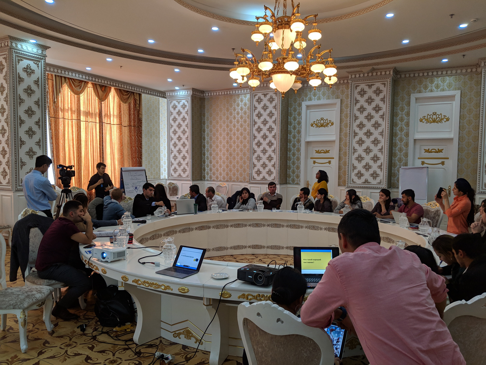

UPSHIFT Social Innovation Curriculum
Overview
Creating a curriculum to facilitate and nurture social innovation projects under UNICEF's UPSHIFT programme in Tajikistan to help entrepreneurial adolescents create social impact.Role
Facilitator and DesignerClient
UNICEF TajikistanFor
QuicksandUPSHIFT is a youth social innovation and social entrepreneurship programme, designed to build skills and opportunities for young people who are disadvantaged, due to (for example) poverty, gender, disability or ethnicity. The programme empowers young people with the skills and resources they need to identify problems in their own communities and design solutions for them.

Refining the curriculum with the UNICEF Tajikistan
The UPSHIFT programme was started by UNICEF Kosovo, and it was very successful. UNICEF in Tajikistan too wanted to start their own UPSHIFT programme, and Quicksand was called in to help design the programme and facilitate the bootcamps. In the two weeks that the Quicksand team was in Dushanbe, we helped refine the human centered design methodology and design a bootcamp agenda which could subsequently be used by the UNICEF team to conduct further workshops.
Quicksand conducted a week-long Training of Trainers bootcamp with selected mentors from around Tajikistan. These mentors would then go on to facilitate UPSHIFT programmes in their communities.

Workshop to train mentors and trainers

Mentors prototyping new facilitation strategies

Getting comfortable with prototyping tools

The freshly minted UPSHIFT trainers then put the toolkit and their facilitation skills to the test with an UPSHIFT cohort in Dushanbe. Feedback from the trainers was then used to optimise the toolkit material.


Mentors putting their skills to the test with the initial UPSHIFT cohort
A comprehensive toolkit was created, which was used by the UNICEF team and the mentors to train more mentors and use the HCD (Human Centered Design) process to help guide the adolescents on their social entrepreneurship journey.
The facilitation guide and materials for the UPSHIFT Bootcamp are now available for download from UNICEF's website ↗.

Hello from Dushanbe!